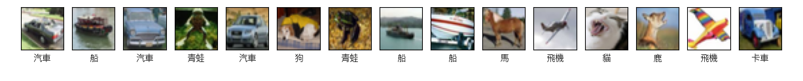
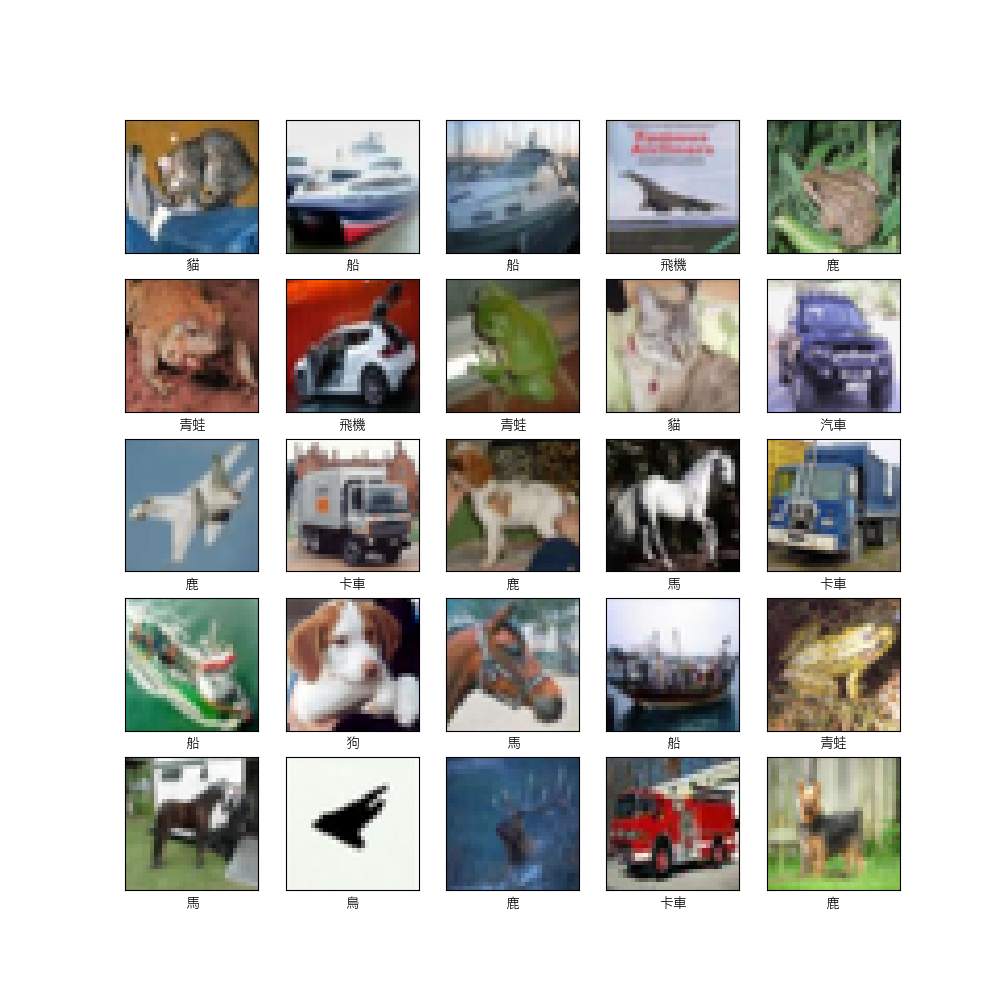

CIFAR-10 彩色影像辨識
CIFAR-10 數據集介紹
CIFAR-10數據集是一個廣泛使用的圖像數據集，主要用於機器學習和計算機視覺領域中的圖像分類任務。該數據集由加拿大蒙特利爾大學的Alex Krizhevsky、Vinod Nair和Geoffrey Hinton收集和整理。
CIFAR-10 內容
- 圖像數量：CIFAR-10數據集包含60,000張彩色圖像，其中50,000張用於訓練，10,000張用於測試。
- 圖像尺寸：每張圖像的尺寸為32x32像素，並且是RGB（彩色）圖像。
- 類別數量：CIFAR-10數據集分為10個類別，每個類別包含6,000張圖像。這10個類別分別是：
- 飛機
- 汽車
- 鳥
- 貓
- 鹿
- 狗
- 青蛙
- 馬
- 船
- 卡車
- 標籤格式：每張圖像對應一個標籤，表示該圖像所屬的類別。標籤是0到9之間的整數，每個數字對應一個類別。
CIFAR-10 特點
CIFAR-10數據集被廣泛使用的原因有以下幾點：
- 標準化：CIFAR-10數據集是一個標準的基準數據集，允許研究人員在相同的數據集上進行比較和評估不同的算法和模型。
- 多樣性：該數據集包含多種不同類型的圖像，涵蓋了日常生活中的常見物體，有助於測試和評估模型的泛化能力。
- 大小適中：CIFAR-10數據集的大小適中，使得在普通計算機上訓練和測試模型變得可行，適合作為研究和教學使用的入門數據集。
- 社群支持：由於CIFAR-10數據集的流行，社群中有大量的文獻、教程和開源代碼可以參考，這對於初學者來說非常友好。
CIFAR-10 數據集圖片範例

Updated at July-28-2024
研究方式
將使用TensorFlow和Keras構建一個卷積神經網絡（CNN），用於對CIFAR-10數據集中的圖像進行分類。CIFAR-10數據集包含60,000張32x32彩色圖像，共分為10個類別。以下是詳細步驟：
步驟一、加載和預處理CIFAR-10數據集
首先，我們需要加載CIFAR-10數據集並對其進行預處理。這裡我們將像素值正規化到0-1之間，以便模型更快地收斂。
import tensorflow as tf
from tensorflow.keras import datasets, layers, models
import matplotlib.pyplot as plt
# 加載CIFAR-10數據集
(x_train, y_train), (x_test, y_test) = tf.keras.datasets.cifar10.load_data()
# 正規化像素值到0-1之間
x_train, x_test = x_train / 255.0, x_test / 255.0
步驟二、構建CNN模型
接下來，我們將構建一個簡單的CNN模型。該模型包含三個卷積層和兩個最大池化層，最後是全連接層。
# 構建CNN模型
model = models.Sequential([
layers.Conv2D(32, (3, 3), activation='relu', input_shape=(32, 32, 3)),
layers.MaxPooling2D((2, 2)),
layers.Conv2D(64, (3, 3), activation='relu'),
layers.MaxPooling2D((2, 2)),
layers.Conv2D(64, (3, 3), activation='relu'),
layers.Flatten(),
layers.Dense(64, activation='relu'),
layers.Dense(10)
])
# 查看模型架構
model.summary()
步驟三、編譯和訓練模型
在構建好模型後，我們需要編譯模型並進行訓練。這裡使用Adam優化器和Sparse Categorical Crossentropy損失函數。
# 編譯模型
model.compile(optimizer='adam',
loss=tf.keras.losses.SparseCategoricalCrossentropy(from_logits=True),
metrics=['accuracy'])
# 訓練模型
history = model.fit(x_train, y_train, epochs=10,
validation_data=(x_test, y_test))
步驟四、可視化accuracy和loss圖表
為了更好地理解模型的性能，我們可以可視化訓練過程中的準確率和損失變化情況。
# 可視化accuracy和loss圖表
plt.figure(figsize=(12, 4))
plt.subplot(1, 2, 1)
plt.plot(history.history['accuracy'], label='訓練準確率')
plt.plot(history.history['val_accuracy'], label='驗證準確率')
plt.xlabel('Epoch')
plt.ylabel('準確率')
plt.legend(loc='lower right')
plt.title('訓練和驗證準確率')
plt.subplot(1, 2, 2)
plt.plot(history.history['loss'], label='訓練損失')
plt.plot(history.history['val_loss'], label='驗證損失')
plt.xlabel('Epoch')
plt.ylabel('損失')
plt.legend(loc='upper right')
plt.title('訓練和驗證損失')
plt.show()
Model Accuracy
Model Loss
步驟五、可視化一些測試圖片及其預測結果
最後，我們可以可視化一些測試圖片及其預測結果，以直觀地了解模型的分類效果。
# CIFAR-10的類別名稱
class_names = ['飛機', '汽車', '鳥', '貓', '鹿', '狗', '青蛙', '馬', '船', '卡車']
# 預測測試集中的前25張圖片
predictions = model.predict(x_test[:25])
plt.figure(figsize=(10, 10))
for i in range(25):
plt.subplot(5, 5, i + 1)
plt.xticks([])
plt.yticks([])
plt.grid(False)
plt.imshow(x_test[i], cmap=plt.cm.binary)
plt.xlabel(class_names[tf.argmax(predictions[i])])
plt.show()
CIFAR-10 測試結果

Updated at July-28-2024
總結
使用TensorFlow和Keras構建一個卷積神經網絡來分類CIFAR-10數據集中的圖像。首先加載並預處理數據，然後構建並訓練模型，最後可視化了模型的性能和預測結果。這是一個簡單而有效的示例，可以作為進一步研究和改進的基礎。